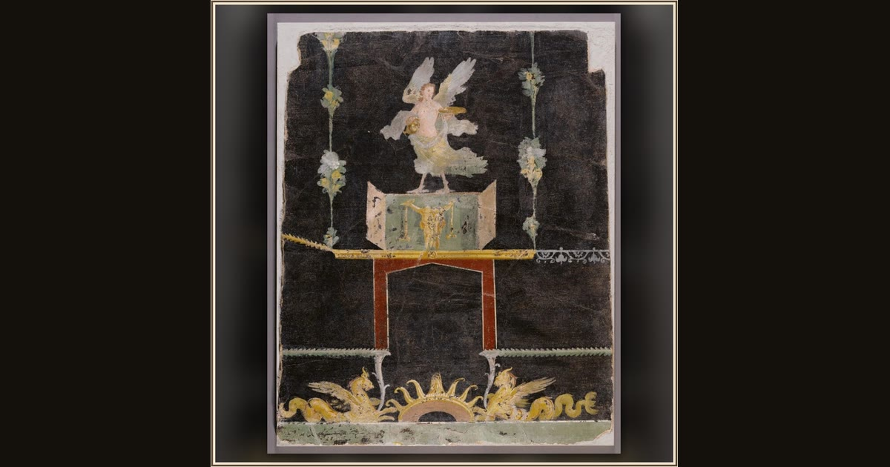

Wall fragment with Siren, Sea Monsters and Niche on Black Ground
Roman (unknown maker) · A.D. 50–79 · The J. Paul Getty Museum · Los Angeles, USA
Painted on a Roman wall long ago, a Siren and sea-monsters drift across the dark — the creatures sailors like Odysseus feared to meet. Explore its place in Book XII of the Odyssey.